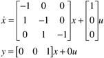

| 1: | Consider the continuous state space model, where the time unit is minutes

Find the eigenvalues of the A matrix. Find the continuous-time transfer function and calculate the poles and zeros. Is the inverse of this transfer function stable? Find the discrete-time transfer function for a sample time of 0.1 minutes. What do you notice about the number of zeros? Is the inverse of this transfer function stable for this sample time? You should increase the sample time to 1.8399 minutes to find that the transmission zero shifts to the right-half-plane. Compare the step responses of the continuous model with the discrete models. Find the "filter" form (backward shift notation) of the discrete transfer function for sample times of 0.1 and 1.
|